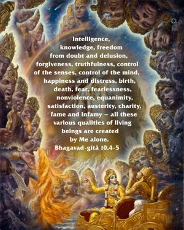
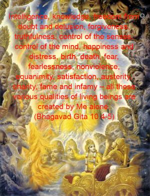
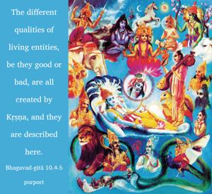
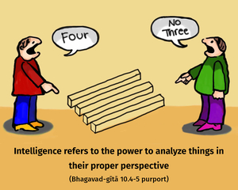
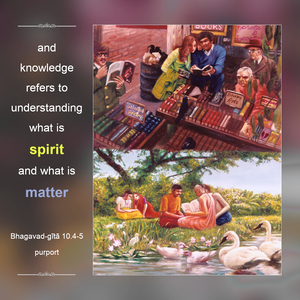

Intelligence, knowledge, freedom from doubt and delusion, forgiveness, truthfulness, control of the senses, control of the mind, happiness and distress, birth, death, fear, fearlessness, nonviolence, equanimity, satisfaction, austerity, charity, fame and infamy – all these various qualities of living beings are created by Me alone.





The different qualities of living entities, be they good or bad, are all created by Kṛṣṇa, and they are described here.
Intelligence refers to the power to analyze things in their proper perspective, and knowledge refers to understanding what is spirit and what is matter. Ordinary knowledge obtained by a university education pertains only to matter, and it is not accepted here as knowledge. Knowledge means knowing the distinction between spirit and matter. In modern education there is no knowledge about spirit; they are simply taking care of the material elements and bodily needs. Therefore academic knowledge is not complete.
Asammoha, freedom from doubt and delusion, can be achieved when one is not hesitant and when he understands the transcendental philosophy. Slowly but surely he becomes free from bewilderment. Nothing should be accepted blindly; everything should be accepted with care and with caution. Kṣamā, tolerance and forgiveness, should be practiced; one should be tolerant and excuse the minor offenses of others. Satyam, truthfulness, means that facts should be presented as they are, for the benefit of others. Facts should not be misrepresented. According to social conventions, it is said that one can speak the truth only when it is palatable to others. But that is not truthfulness. The truth should be spoken in a straightforward way, so that others will understand actually what the facts are. If a man is a thief and if people are warned that he is a thief, that is truth. Although sometimes the truth is unpalatable, one should not refrain from speaking it. Truthfulness demands that the facts be presented as they are for the benefit of others. That is the definition of truth.
Control of the senses means that the senses should not be used for unnecessary personal enjoyment. There is no prohibition against meeting the proper needs of the senses, but unnecessary sense enjoyment is detrimental for spiritual advancement. Therefore the senses should be restrained from unnecessary use. Similarly, one should restrain the mind from unnecessary thoughts; that is called śama. One should not spend one’s time pondering over earning money. That is a misuse of the thinking power. The mind should be used to understand the prime necessity of human beings, and that should be presented authoritatively. The power of thought should be developed in association with persons who are authorities in the scriptures, saintly persons and spiritual masters and those whose thinking is highly developed. Sukham, pleasure or happiness, should always be in that which is favorable for the cultivation of the spiritual knowledge of Kṛṣṇa consciousness. And similarly, that which is painful or which causes distress is that which is unfavorable for the cultivation of Kṛṣṇa consciousness. Anything favorable for the development of Kṛṣṇa consciousness should be accepted, and anything unfavorable should be rejected.
Bhava, birth, should be understood to refer to the body. As far as the soul is concerned, there is neither birth nor death; that we have discussed in the beginning of Bhagavad-gītā. Birth and death apply to one’s embodiment in the material world. Fear is due to worrying about the future. A person in Kṛṣṇa consciousness has no fear because by his activities he is sure to go back to the spiritual sky, back home, back to Godhead. Therefore his future is very bright. Others, however, do not know what their future holds; they have no knowledge of what the next life holds. So they are therefore in constant anxiety. If we want to get free from anxiety, then the best course is to understand Kṛṣṇa and be situated always in Kṛṣṇa consciousness. In that way we will be free from all fear. In the Śrīmad-Bhāgavatam (11.2.37) it is stated, bhayaṁ dvitīyābhiniveśataḥ syāt: fear is caused by our absorption in the illusory energy. But those who are free from the illusory energy, those who are confident that they are not the material body, that they are spiritual parts of the Supreme Personality of Godhead, and who are therefore engaged in the transcendental service of the Supreme Godhead, have nothing to fear. Their future is very bright. This fear is a condition of persons who are not in Kṛṣṇa consciousness. Abhayam, fearlessness, is possible only for one in Kṛṣṇa consciousness.
Ahiṁsā, nonviolence, means that one should not do anything which will put others into misery or confusion. Material activities that are promised by so many politicians, sociologists, philanthropists, etc., do not produce very good results because the politicians and philanthropists have no transcendental vision; they do not know what is actually beneficial for human society. Ahiṁsā means that people should be trained in such a way that the full utilization of the human body can be achieved. The human body is meant for spiritual realization, so any movement or any commissions which do not further that end commit violence on the human body. That which furthers the future spiritual happiness of the people in general is called nonviolence.
Samatā, equanimity, refers to freedom from attachment and aversion. To be very much attached or to be very much detached is not the best. This material world should be accepted without attachment or aversion. That which is favorable for prosecuting Kṛṣṇa consciousness should be accepted; that which is unfavorable should be rejected. That is called samatā, equanimity. A person in Kṛṣṇa consciousness has nothing to reject and nothing to accept save in terms of its usefulness in the prosecution of Kṛṣṇa consciousness.
Tuṣṭi, satisfaction, means that one should not be eager to gather more and more material goods by unnecessary activity. One should be satisfied with whatever is obtained by the grace of the Supreme Lord; that is called satisfaction. Tapas means austerity or penance. There are many rules and regulations in the Vedas which apply here, like rising early in the morning and taking a bath. Sometimes it is very troublesome to rise early in the morning, but whatever voluntary trouble one may suffer in this way is called penance. Similarly, there are prescriptions for fasting on certain days of the month. One may not be inclined to practice such fasting, but because of his determination to make advancement in the science of Kṛṣṇa consciousness, he should accept such bodily troubles when they are recommended. However, one should not fast unnecessarily or against Vedic injunctions. One should not fast for some political purpose; that is described in Bhagavad-gītā as fasting in ignorance, and anything done in ignorance or passion does not lead to spiritual advancement. Everything done in the mode of goodness does advance one, however, and fasting done in terms of the Vedic injunctions enriches one in spiritual knowledge.
As far as charity is concerned, one should give fifty percent of his earnings to some good cause. And what is a good cause? It is that which is conducted in terms of Kṛṣṇa consciousness. That is not only a good cause, but the best cause. Because Kṛṣṇa is good, His cause is also good. Thus charity should be given to a person who is engaged in Kṛṣṇa consciousness. According to the Vedic literature, it is enjoined that charity should be given to the brāhmaṇas. This practice is still followed, although not very nicely in terms of the Vedic injunction. But still the injunction is that charity should be given to the brāhmaṇas. Why? Because they are engaged in higher cultivation of spiritual knowledge. A brāhmaṇa is supposed to devote his whole life to understanding Brahman. Brahma jānātīti brāhmaṇaḥ: one who knows Brahman is called a brāhmaṇa. Thus charity is offered to the brāhmaṇas because they are always engaged in higher spiritual service and have no time to earn their livelihood. In the Vedic literature, charity is also to be awarded to one in the renounced order of life, the sannyāsī. The sannyāsīs beg from door to door, not for money but for missionary purposes. The system is that they go from door to door to awaken the householders from the slumber of ignorance. Because the householders are engaged in family affairs and have forgotten their actual purpose in life – awakening their Kṛṣṇa consciousness – it is the business of the sannyāsīs to go as beggars to the householders and encourage them to be Kṛṣṇa conscious. As it is said in the Vedas, one should awake and achieve what is due him in this human form of life. This knowledge and method is distributed by the sannyāsīs; hence charity is to be given to the renouncer of life, to the brāhmaṇas, and similar good causes, not to any whimsical cause.
Yaśas, fame, should be according to Lord Caitanya, who said that a man is famous when he is known as a great devotee. That is real fame. If one has become a great man in Kṛṣṇa consciousness and it is known, then he is truly famous. One who does not have such fame is infamous.
All these qualities are manifest throughout the universe in human society and in the society of the demigods. There are many forms of humanity on other planets, and these qualities are there. Now, for one who wants to advance in Kṛṣṇa consciousness, Kṛṣṇa creates all these qualities, but the person develops them himself from within. One who engages in the devotional service of the Supreme Lord develops all the good qualities, as arranged by the Supreme Lord.
Of whatever we find, good or bad, the origin is Kṛṣṇa. Nothing can manifest itself in this material world which is not in Kṛṣṇa. That is knowledge; although we know that things are differently situated, we should realize that everything flows from Kṛṣṇa.